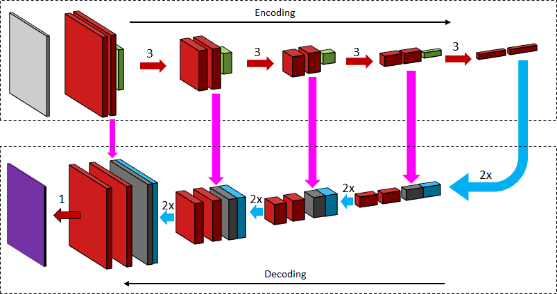

A plain-language tour of how deep networks learned to label every pixel
Image segmentation means giving every pixel in a picture a label, so that a road, a person or a tumour comes out as a clean region. Many deep-learning techniques for it have appeared in recent years. We wrote this survey to give an intuitive understanding of the major ones: why each is designed the way it is, what it gets right and where it fails.
What segmentation is
In the classic version, called semantic segmentation, each pixel is assigned to one of a fixed set of classes such as road, sky or car. The survey is careful to say that the right labels depend on the job. A pedestrian detector wants the whole person as one segment. A system that recognises actions may need arms and legs as separate ones. Other variants include saliency detection (find the most eye-catching object) and instance segmentation (give each individual car its own mask, which is needed for counting).

Before deep learning, people used thresholding, clustering, edge detection, region-based methods and similar approaches. They share one weakness. They depend on features that a human expert chose, and people tend to miss subtle patterns. A convolutional neural network (CNN) learns its own features instead. It slides small filters over the image, and training adjusts the filters to whatever helps the task.
Why convolutions suit the task
After training, the filters of a typical CNN tend to respond to particular features of objects. Each filter outputs an activation map, an image showing where its pattern was found, and these maps can be read as rough masks of those features. In early layers they pick out contours and small parts, such as a T-shirt. In later layers they light up on larger things such as fields, people and sky, but with blurrier edges. Most segmentation methods use this property to turn the maps into the masks they need.

The families of methods
We grouped the methods by their main idea and drew almost all the networks in one shared visual format, so that similarities and differences are easy to see. Table 2 of the survey summarises the major methods with a short note on each contribution.
- CNN-based. FCN removes the final fully connected layers and classifies pixels directly. It scored a pixel accuracy of 90.3% and a mean IoU of 62.7% on PASCAL VOC 2011. Region-proposal networks such as Mask R-CNN add a branch that masks each detected object. DeepLab uses atrous (dilated) convolutions, which widen a filter's field of view without adding parameters, and attained a mean IoU of 79.7 on PASCAL VOC 2012.
- Encoder-decoder. The encoder compresses the image and the decoder expands it back to a full-size label map. This frees the network from a fixed input size. SegNet forwards the positions of max-pooling winners to the decoder. U-Net copies whole feature maps across, so fine detail survives.
- Adversarial. A discriminator network tries to tell the ground-truth masks from the predicted ones, which pushes the segmenter to produce realistic masks.
- Sequential. Convolutional LSTMs and attention models pick out instances of an object one after another.
- Weak, unsupervised and interactive. These need fewer or coarser labels. BoxSup trains from bounding boxes and reached a mean IoU of 75.1 on PASCAL VOC 2012, against 62.2 for FCN. W-Net chains two U-Nets and needs no labels at all. Deep Extreme Cut asks the user for four clicks on the extremes of an object.
- Efficient. ENet has 0.37 million parameters. Deep Layer Cascade handles easy pixels early and spends effort only on hard ones, reaching 23.6 frames per second against 14.6 for SegNet. Our own SegFast has about 0.6 million parameters and runs a forward pass in around 0.38 seconds without a GPU.

What we concluded
Choosing a method means weighing several things. One is how much labelled data you have. Another is whether you can start from a pre-trained network. A third is whether you need instances or only classes, and how much speed matters. Encoder-decoder networks and fully convolutional ones are the most common choice for semantic segmentation. Instance-level work often couples these with detection, attention or recurrent parts. For speed, depth-wise separable convolutions and kernel factorization can cut the number of parameters to a great extent without reducing performance too much. GANs have risen sharply in popularity, yet only a handful of segmentation approaches use them, so we see room there.
The survey also covers applications: image retrieval, medical imaging, object detection, forensics and surveillance. A table groups public datasets by category, among them natural scenes, autonomous driving, aerial imaging, medical imaging, saliency detection and scene text (Table 1).
What it does not do
This is a theoretical survey. We explain and compare ideas, but we did not re-run the methods side by side. The numbers quoted above are the ones reported in the original works, and they come from different benchmarks, so they are not a league table. We suggest that an empirical analysis of the discussed methods could follow.
The article is written for new researchers, with minimal mathematics, so that they can see why a design works before trying to improve it.
Sources
The figures and tables listed here are taken from the paper cited at the top of this page; the numbers quoted in the text come from the paper too.
- Figures: Fig. 1, Fig. 3, Fig. 13
- Tables: Table 1: public segmentation datasets grouped by application area; Table 2: summary of the major deep-learning segmentation methods
Acknowledgements
This work was partially supported by project order no. SB/S3/EECE/054/2016, dated 25/11/2016, sponsored by SERB (Government of India), and carried out at the Centre for Microprocessor Application for Training Education and Research, CSE Department, Jadavpur University. The authors also thank the reviewers for their valuable suggestions, which helped to improve the quality of the article.
How to cite the paper
Swarnendu Ghosh, N Das, I Das, U Maulik (2019). Understanding deep learning techniques for image segmentation. ACM Computing Surveys (CSUR), Vol. 52, No. 4, pp. 1–35 · ACM.